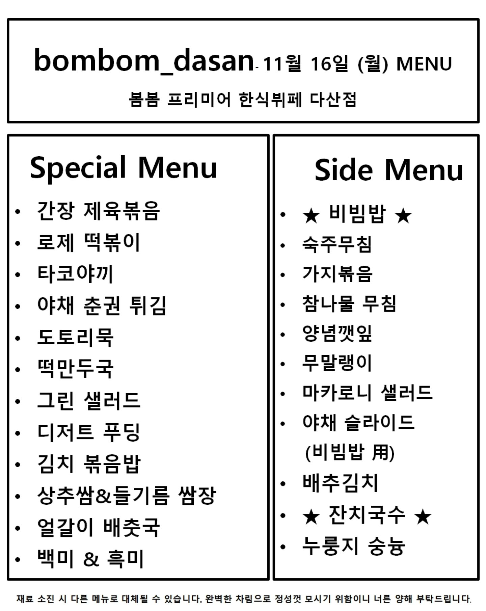
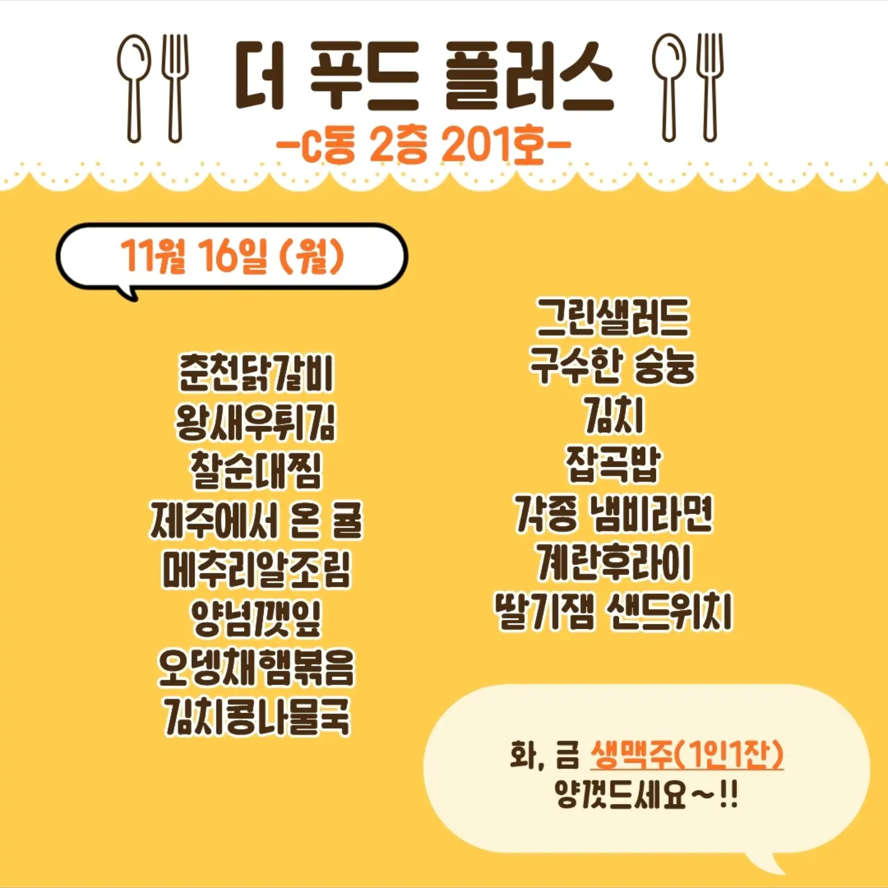

봄봄 식당

- bombom_dasan 11월 16일 월) MENU
- 봄봄 프리미어 한식부페 다산점
- Special Menu Side Menu
- 간장 제육볶음
- 로제 떡볶이 숙주무침
- 타코야끼 가지볶음
- 야채 춘권 튀김 참나물 무침
- 도토리묵 양념껏잎
- 떡만두국 무말램이
- 마카로니 실러드
- 디저트 푸딩 야채 슬라이드
- 김치 볶음밥
- 배추김치
- 얼갈이 배추국 잔치국수
- 백미 & 흑미
- 재료 소진 시 다른 메뉴로 대체월 수 있습니다. 완벽한 차림으로 정성껏 모시기 위삼이니 너른 양해 부탁드립니다
더 푸드 플러스

- 더 푸드 플러스
- -C동 2층 201호-
- 11월 16일 (월)
- 그런실러드
- 찰순대짐 잡곡밥
- 제주에서 온 꿀 각종 냄라면
- 계란후라이
- 딸기짐 샌드위치
- 화; 금 생맥주(1인1잔)
밥생각
오늘 올라온 게시물이 없어 2026-11-13 게시물을 보여줍니다.